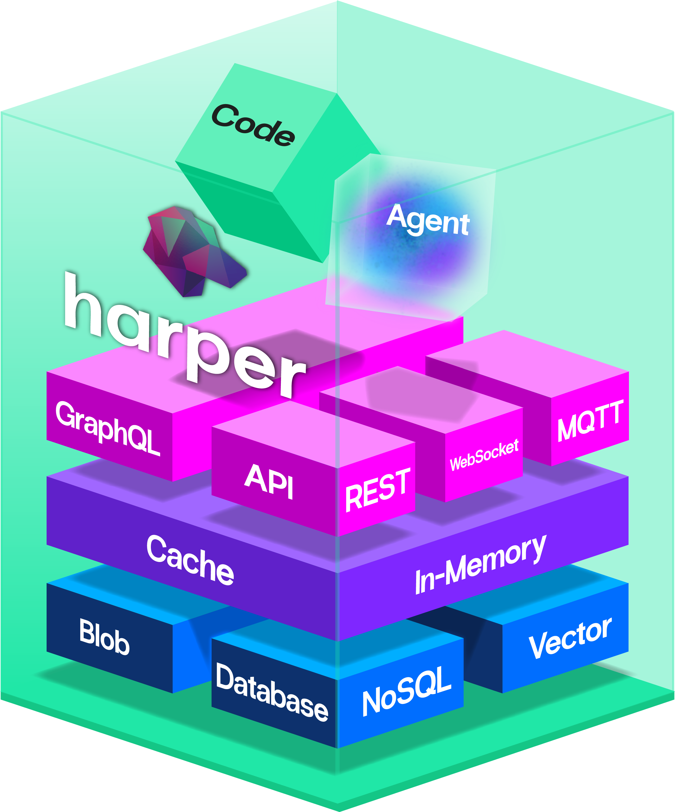

Harper Integration Testing Framework Development and Impact Analysis
Ethan Arrowood, Head of Open Source Engineering @ Harper
https://ethanarrowood.com/
About me
Experience
- Harper: Head of Open Source Engineering, 2024 to present
- Vercel: Senior Software Engineer, 2022 to 2024
- Microsoft: Software Engineer II, 2019 to 2022
Open source
- Previous Fastify maintainer
- Node.js & Undici maintainer
- OpenJS Foundation
- Ecma TC39 and TC55
ethanarrowood.comgithub.com/Ethan-Arrowoodlinkedin.com/in/ethan-arrowood
Outline
- What am I testing? Harper, the platform under test
- The problem Harper's legacy integration suite
- The goal Every test file gets its own Harper
- How much parallelism? Measuring instead of guessing
- Networking contention Everything wants port 9925
- Framework agnostic One lifecycle, any test runner
- Surviving CI Sharding across runners
- Did it work? Harper core, harper-pro, and plugins
- Looking back
What am I testing?

github.com/HarperFast/harper (Apache 2.0)
Harper is an application platform
Harper can run all sorts of applications
Applications
- Web apps: Vite, React, Astro, Next.js
- APIs: REST, GraphQL, MQTT, MCP
- Each app in its own isolated JavaScript context
AI
- Models: Anthropic, Bedrock, OpenAI, Ollama
- Built-in MCP server for LLM clients
- GPU access for LLMs
Data
- Storage: RocksDB (v5 default), LMDB, blobs
- HNSW vector search with automatic embeddings
- BM25 full-text search
- Branched databases: a private data fork per app
Clusters
- Multi-instance replication
- Sharding by primary key
Testing is hard
"It works on my machine."
"That test's just flaky, re-run it."
"You can't run those locally."
"It only runs in CI."
"Don't touch it! It's finally green."
The problem
Harper's legacy integration suite
Before: one long, ordered test suite
// integrationTests/apiTests/tests/testSuite.mjs
describe('Main Test Suite', async () => {
await import('./0_envCleanup.mjs');
await import('./1_environmentSetup.mjs');
await import('./2_dataLoad.mjs');
await import('./3_sqlTests.mjs');
// … 23 more, in exactly this order
await import('./26_crlVerification.mjs');
});Inherited from Harper v4, before the open-source split. Ref: HarperFast/harper@fb098c0
- Each test executed sequentially
- Each file depends on the state of the previous
- All tests shared a singular Harper instance
Shared state meant
- No running one file on its own
- No sharding across machines
- No parallelism
- No isolating a failure to one test
One test fails? Must rerun the entire suite to debug.
7.5 min median to run the suite
p90 7.7 min · (May to Jun 2026)
Most of each run was waiting
Median test step: 7.5 min
A lower bound: polling helpers aren't counted. On Jun 2, harper PR #1091 replaced the restart sleeps with polls that wait until Harper responds, and the median step fell to 5.6 min.
of main pushes had the suite fail on at least one Node version
Dec 2025 to Jun 2026
of failing runs had another Node version pass on the same commit
77 of 126 failing attempts, Dec 2025 to Jun 2026
Fixing one bug, the old way
- Make a one-line change
- Push it, then wait about 8 minutes for CI
- A test in a file you never touched fails
- Your change? State from an earlier file? Just flaky?
- Rerun the whole suite and hope
Every failure was a wild goose chase.
The goal
Every test file gets its own Harper
Define "integration"
Unit
A single unit of code; everything else mocked/stubbed.
too littleIntegration
The complete application. No hooking into internals.
just rightEnd-to-end
The full production stack. Like end users experience.
too muchApplication is a black box
- Requests & operations
- Config, env, CLI flags
- stdin & signals
- Responses & status
- Logs, stdout/stderr
- Files & exit codes
No mocking, no stubbing, no reaching inside. Assert on behavior, never on implementation.
Application = Process
Integration testing an application means managing the lifecycle of the process
Manage the lifecycle
- Start it
- Wait for it to be ready
- Restart it
- Stop it
- Clean up
Interact with the process
- Send signals to it
- Write to stdin
- Stream and read stdout and stderr
- Read and process log files
- Monitor crashes
What does one test need to be independent?
- Isolated Harper process, data directory, and network address
- Hooks for Harper application lifecycle
- Log retainment for debugging
- Process cleanup after a successful or failed run
How do we…
isolate each test file in its own process?without changing Harper core
make the suite run everywhere?any OS, any test runner, locally and in CI
test every kind of application?
do it all performantly?
Early decision: use node:test test runner API
- One less dependency to manage
- Simple concurrency model to architect around
- Dogfood the API
- Plan for a runner-agnostic API that works with other runners
When running multiple complex processes
how much parallelism is actually possible?
Measuring instead of guessing
node:test "concurrency" is overloaded
Test runner concurrency = file-level process parallelism
node --test \
--test-concurrency=5 \
"*.test.js"Test suite concurrency = in-process async concurrency
suite('x', { concurrency: true }, () => {
test('a', async () => { … });
test('b', async () => { … });
});Node's default concurrency is built for cheap tests
node --test --test-concurrencyos.availableParallelism() - 1 // 11 on my laptopEach test process starts an application process, so every test file needs two processes, not one.
However, computers are really good at doing multiple things at once.
The experiment
- 20 generated test files, each starting an application process
- Concurrency 1 → 12 (sequential to max parallelism)
- 25 samples per level, on a normal developer laptop
https://github.com/ethan-arrowood/node-test-runner-parallelization-analysis
Work per file
Work per file randomized within a mode:
- 0-100 MB file I/O
- 0-3 processes
- 0-4 worker threads
The gain plateaus, then reverses
Total median suite duration (shorter is faster)
Past the plateau, variance more than doubles
20 test files · 25 samples per level · duration in ms · std dev: how much run times spread
| Concurrency | Median | Std dev | p95 | Worst run |
|---|---|---|---|---|
| 7 | 3,468 | 294 | 3,990 | 4,520 |
| 10 | 3,534 | 654 | 5,339 | 5,466 |
| 11 | 3,724 | 690 | 5,096 | 5,717 |
Std dev jumps from 294 at the optimum to 654 and 690 just past it
The run-to-run spread more than doubles.
The real developer experience is in the tail
20 test files · 25 samples per level · duration in ms · p95: 95% of runs finish faster
| Concurrency | Median | Std dev | p95 | Worst run |
|---|---|---|---|---|
| 4 | 3,904 | 368 | 4,648 | 5,238 |
| 10 | 3,534 | 654 | 5,339 | 5,466 |
At 10, the median is 9.5% faster than at 4, but the p95 is 14.9% slower (5,339 vs. 4,648).
2.5× the concurrency for a slower tail.
Calculated default
When each test file starts its own application process, a good default is
half the available parallelism, plus one
concurrency = floor(availableParallelism / 2) + 1
= floor(12 / 2) + 1
= 7 // the measured optimumThis might not be perfect, but it's a better starting point than max parallelism, and remains configurable
Networking contention
Everything wants port 9925
Dynamic ports would mean core changes
The easy fix: let the OS hand out a free port.
server.listen(0, () => {
const { port } = server.address(); // the OS picked a free one
});But two problems:
- The app has to report back which ports it received
- Harper currently requires ports to be configured
How can we solve this without modifying core?
Not a real fix: get-port
// what get-port does, roughly:
async function getPort() {
const server = net.createServer();
await listen(server, 0); // OS assigns a free port
const { port } = server.address();
await close(server); // ← the port is released here
return port;
}
const port = await getPort();
const harper = await createHarper(port); // ← nothing reserved it in betweenBetween the release and the reuse, the OS can hand that port to any other process, especially with many test processes racing at once.
If we can't reliably reserve the ports…
what about the address?
Introducing loopback addresses
All of 127.0.0.0/8 (127.0.0.1 through 127.255.255.255) loops back to this machine: no network card, nothing leaves the computer
// every instance keeps its default ports
test/application 1 → http://127.0.0.2:9925
test/application 2 → http://127.0.0.3:9925
test/application 3 → http://127.0.0.4:9925- Every instance can use port 9925 without conflict
- Isolation is by address
One caveat: macOS needs setup
| Platform | 127.0.0.1 | 127.0.0.2-127.255.255.255 |
|---|---|---|
| Linux (Ubuntu) | Enabled by default | Enabled by default |
| macOS | Enabled by default | Must be added per address |
| Windows | Enabled by default | Enabled by default |
macOS: register each address
# once per boot, or install the provided launchd daemon
npx harper-integration-test-setup-loopback
# what it runs for each address in the pool
sudo ifconfig lo0 alias 127.0.0.2 netmask 255.255.255.255 upThree options for port conflicts
| Option | Cost |
|---|---|
| Dynamic ports | Changes to Harper core |
get-port | A race between checking a port and using it |
| An address per instance | One-time setup on macOS |
Every alias claims the same network
No explicit netmask? macOS assigns /8.
# address claimed network
127.0.0.2 → 127.0.0.0/8
127.0.0.3 → 127.0.0.0/8
127.0.0.4 → 127.0.0.0/8- Each address conflicts with every other.
- mDNSResponder (macOS network naming) keeps defending them.
O(n²) work. A storm of announcements.
/32 removes the overlap
255.255.255.255: each alias claims only itself.- Same pool capacity. Same test isolation.
254 aliases. One macOS box. One paired measurement.
| Netmask | mDNSResponder CPU | UDP 5353 packets / 8 s |
|---|---|---|
/8 | ~65% | 85 |
/32 | ~0% | 5 |
Found and fixed by Kris Zyp · integration-testing #21 · July 2026
How do we manage which process gets which address?
Loopback Address Pool: JSON file with an array of PIDs, shared by every test process.
[42, 43, null, 45, null, null]index 0 → 127.0.0.2 (PID 42) · index 1 → 127.0.0.3 (PID 43) · …
- Index is the address; value is the owning process ID
- First-available allocation; released once its ports are free
Coordinating separate processes
| Option | Cost |
|---|---|
| A coordinator daemon | Another process to start and keep alive |
Shared memory (Atomics) | Only works between threads in one process |
| A file lock | Has to handle holders that crash |
Cross-process mutex to avoid conflicts
// 'wx' fails atomically if the file already exists
const handle = await open(LOCK_PATH, 'wx');
await handle.writeFile(token); // we hold the lock
await handle.close();File lock was simplest. Plus a stale-lock timeout for crashed processes.
A slow writer can lose the lock
await writeFile(pendingPath, JSON.stringify(pool));
await assertLockHeld(token); // still ours?
await rename(pendingPath, POOL_PATH); // atomic publishIf a write outlasts the stale timeout, another process takes the lock. The token check narrows the window where the old writer could overwrite the new claim.
Crashed tests would leak addresses forever
// signal 0 checks liveness without signalling
try {
process.kill(pid, 0); // alive: leave it allocated
} catch {
loopbackPool[index] = null; // dead: reclaim it
}A Ctrl+C mid-run doesn't break the pool
Crashed runners left Harper running
- Each Harper starts in its own process group
- A shared monitor reaps groups whose runner died
- macOS and Linux only; Windows relies on runner cleanup
Kris Zyp · integration-testing #30 · September 2026
Allocated is not the same as usable
// bind to port 0 just to prove the address exists
server.listen(0, loopbackAddress, () => {
server.close(() => resolve(loopbackAddress));
});1. Verify the whole pool at startup (ensure setup script was run)
2. Verify again per allocation to avoid collisions
A dying node can still hold the address
Harper's HTTP workers bind with SO_REUSEPORT, which lets several sockets share one port. A new node could share 9926 with an old node's lingering workers and split its connections.
// an exclusive bind fails with EADDRINUSE, even beside an SO_REUSEPORT socket
for (const port of [9925, 9926]) {
if (await isPortInUseOnAddress(port, address)) skip(address);
}Some listeners cover every address
A process on 0.0.0.0:9926, like a local Harper, overlaps the whole pool. On macOS and Windows it quietly takes a node's connections.
// an exclusive bind succeeds beside it there, so connect instead
const port = await findAcceptingPort(address, [9925, 9926]);
if (port) throw new ForeignListenerError(address, port);Dawson Toth · integration-testing #40 · October 2026
The API is shaping up
// ctx is a general options object
await startHarper(ctx);
// 1. create a temporary install directory
// 2. allocate a loopback address from the pool
// 3. spawn Harper, wait until it is actually ready
// 4. populate ctx.harperFramework agnostic
The API imports nothing from a test runner
startHarper(ctx, options?)
setupHarperWithFixture(ctx, fixturePath, options?)
killHarper(ctx)
teardownHarper(ctx)
createHarperContext(name?) // for non-node:test frameworksctx is any object with an optional name and a harper property to write to.
Deliberately loose, so a node:test context and a plain object both satisfy it.
Keep it flexible
# the convenience runner sets a smarter concurrency default
npx harper-integration-test-run "integrationTests/**/*.test.ts"
# plain node:test runs the same files
node --test "integrationTests/**/*.test.ts"https://github.com/HarperFast/integration-testing/blob/main/src/run.ts
The convenience runner (configures a smarter concurrency default) holds no state.
Every test file still runs under plain node --test, and parallelization still works.
Two runners, same lifecycle
node:test - file per process
suite('install', (ctx: ContextWithHarper) => {
before(async () => {
await startHarper(ctx);
});
after(async () => {
await teardownHarper(ctx);
});
test('serves', async () => {
const res = await fetch(ctx.harper.httpURL);
strictEqual(res.status, 200);
});
});Real example: HarperFast/harper integrationTests/apiTests/headers.test.mjs
Two runners, same lifecycle
Playwright - worker-scoped fixture
const test = base.extend<{}, { harper: HarperContext }>({
harper: [makeHarperFixture(name), { scope: 'worker' }],
});
test('home page renders', async ({ page, harper }) => {
await page.goto(harper.httpURL);
await expect(page.locator('h1')).toHaveText('Next.js v16');
});Real example: fixture.ts and next-16.pw.ts in HarperFast/nextjs
Surviving CI
How do you think an M3 MacBook compares to a default GitHub CI runner?
One default runner can't run all the tests
Parallelize across runners: a matrix that shards the suite, splitting the test files into groups that run on separate machines.
# .github/workflows/integration-tests.yml
strategy:
matrix:
shard: [1, 2, 3, 4]
steps:
- run: node --test --test-shard=${{ matrix.shard }}/4--test-shard=1/4 always runs the same group of tests, on any machine
https://github.com/HarperFast/harper/blob/main/.github/workflows/integration-tests.yml
Did it work?
Eleven months of Harper CI data
Who it was for
Initially
- Harper engineers changing core
- The harper-pro team testing clusters
- Plugin and template authors, like Next.js
- Anyone running one test on a laptop
Later
- Test Harper applications (internal and external)
- Provide confidence for customer migration and SaaS upgrades
Porting it took 3.5 weeks
Kris Zyp, working with coding agents
May 15 to Jun 9, 2026
- 14 PRs, one legacy file or group each
- 17 self-contained files, each with its own Harper
- 19,977 lines of legacy suite and infrastructure deleted
The legacy suite stayed flat. The new one grew.
Legacy suiteFramework tests
Harper engineers added 1,326 tests after the port finished.
More PRs come with integration tests
Merged harper pull requests (PRs) by month, and how many touched integration tests
Touched integration testsOther merged PRs
Bar height: PRs merged that month. Above each bar: PRs that touched integration tests, of all merged. On the bar: that share.
More code changes ship with a test
PRs that change non-test code, and how many also change an integration test
Also changed an integration testCode only
Bar height: merged PRs that changed non-test code. Above each bar: how many also changed an integration test. On the bar: that share.
Today, one CI run executes
starting 421 Harper instances, in 5.4 minutes
six Linux Node.js 24 shards running at once, Oct 21, 2026
74 minutes of tests, finished in 5.4
About 13.8× less. The sum was measured while files ran concurrently, so it estimates a serial run rather than measuring one.
On every platform we test in CI
Node 22, 24, 26, Bun, Windows, and uWS
six shards each
And returns a result in about 12 minutes
median time to a full-matrix result
205 successful first-attempt main runs, last 30 days
And CI runs them all the time
Runs of harper's integration test workflow, by month
Through MayFrom June (the port finished Jun 9)
CI is not always green
Main pushes with a failed job, by month. Failure rate, not flake rate.
CI isn't reliable yet
- 20% of main runs failed (52 of 258); PR runs fail at a similar rate (17%)
- 36 of the 52 failed in one configuration, most often uWS
- 12 failed on every Linux Node version at once: likely real regressions
On Linux Node versions alone, 11% of main runs failed. The legacy suite's rate was 9.3%, with about a third of the tests.
harper-pro
Cluster tests on one machine
Cluster tests used to need a cloud VM
- Provision a VM for every run
- Start the nodes in containers; test over SSH
- Copy the logs back; destroy the VM
Now a cluster fits in one test file
await Promise.all([
startHarper(ctxA, config(hostnameA)),
startHarper(ctxB, config(hostnameB)),
]);
// two nodes, two loopback addresses, one runnerharper-pro cluster tests: 1 to 104 files
Harper plugins
Starting with Next.js
Every Next.js version gets its own Harper
Next.js 14, 15, and 16
webpack, Turbopack, ISR, use cache, cluster
Harper tests itself against the Next.js plugin
check runs on Harper PRs since Jul 15, 2026
Each run builds the PR's Harper, then runs the Next.js plugin's own test suite against it
Plugin breakage shows up in Harper's PR
sampled check runs flagged a failure before merge
Advisory. Some flags may come from the plugin's own main branch, not the Harper change.
Adopted across HarperFast
import @harperfast/integration-testing
Largest public suites: harper-pro (126 files), oauth (6), symphony (4)
Looking back
Discovering core testing values for high quality tests
- Independent: no dependence on order or shared state
- Hermetic: self-contained, no external side effects
- Deterministic: same input, same output
What I'd do differently
- TODO
What it changed
- ~1,000 order-dependent tests became 2,632 tests in isolated files
- A full 36-job CI result in about 12 minutes
- Cluster tests on one machine: 1 file became 104
- About a third of code PRs ship an integration test
- 32 HarperFast repos import the package
Next: making CI reliable
Thank you
Ethan Arrowood · Head of Open Source Engineering, Harper · ethanarrowood.com
- Framework
- github.com/HarperFast/integration-testing
- Analysis
- github.com/Ethan-Arrowood/node-test-runner-parallelization-analysis
- Next.js
- github.com/HarperFast/nextjs
- Slides
- ethanarrowood.com/harper-integration-testing-framework-development-and-impact-analysis/slides
- Data
- ethanarrowood.com/harper-integration-testing-framework-development-and-impact-analysis/data